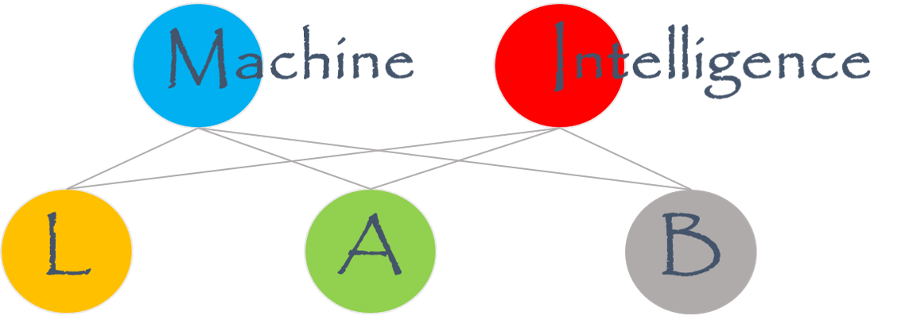

|
Yadong Mu
Wangxuan Institute of Computer Technology
No. 128, Zhong-Guan-Cun North Street
Peking University, Beijing 100080, China
E-mail: myd AT pku.edu.cn OR muyadong AT gmail DOT com |

|

|
2023
- Hanwen Liu, Peilin Zhao, Tingyang Xu, Yatao Bian, Junzhou Huang, Yuesheng Zhu, Yadong Mu
Curriculum Graph Poisoning, [pdf]
International World Wide Web Conference (WWW) 2023.
- Xingqian Xu, Shant Navasardyan, Vahram Tadevosyan, Andranik Sargsyan, Yadong Mu, Humphrey Shi
Image Completion with Heterogeneously Filtered Spectral Hints, [pdf]
Winter Conference on Applications of Computer Vision 2023.
- Xinzhe Zhou, Yadong Mu
Tree-Structured Trajectory Encoding for Vision-and-Language Navigation, [pdf]
AAAI 2023.
- Zhicheng Sun, Yadong Mu, Gang Hua
Regularizing Second-Order Influences for Continual Learning, [pdf]
IEEE Conference on Computer Vision and Pattern Recognition (CVPR) 2023.
- Yang Jin, Yongzhi Li, Zehuan Yuan, Yadong Mu
Learning Instance-Level Representation for Large-Scale Multi-Modal Pretraining in E-commerce, [pdf]
IEEE Conference on Computer Vision and Pattern Recognition (CVPR) 2023.
- Xinghan Wang, Xin Xu, Yadong Mu
Neural Koopman Pooling: Control-Inspired Temporal Dynamics Encoding for Skeleton-Based Action Recognition, [pdf]
IEEE Conference on Computer Vision and Pattern Recognition (CVPR) 2023.
2022
- Yang Jin, Yongzhi Li, Zehuan Yuan, Yadong Mu
Embracing Consistency: A One-Stage Approach for Spatio-Temporal Video Grounding, [pdf]
NeurIPS 2022.
- Hao Jiang, Yadong Mu
Conditional Diffusion Process for Inverse Halftoning, [pdf]
NeurIPS 2022.
- Yang Jin, Linchao Zhu, Yadong Mu
Complex Video Action Reasoning via Learnable Markov Logic Network, [pdf][supp]
IEEE Conference on Computer Vision and Pattern Recognition (CVPR) 2022.
- Hao Jiang, Yadong Mu
Joint Video Summarization and Moment Localization by Cross-Task Sample Transfer, [pdf][supp]
IEEE Conference on Computer Vision and Pattern Recognition (CVPR) 2022.
- Xinzhe Zhou, Wei Liu, Yadong Mu
Rethinking the Spatial Route Prior in Vision-and-Language Navigation, [pdf]
arXiv:2110.05728
- Peijun Bao, Yadong Mu
Learning Sample Importance for Cross-Scenario Video Temporal Grounding, [pdf]
ACM International Conference on Multimedia Retrieval (ICMR) 2022.
- Ben Xue, Chenchen Liu, Yadong Mu
Video2Subtitle: Matching Weakly-Synchronized Sequences via Dynamic Temporal Alignment, [pdf]
ACM International Conference on Multimedia Retrieval (ICMR) 2022.
- Zhicheng Sun, Yadong Mu
Patch-based Knowledge Distillation for Lifelong Person Re-Identification, [pdf]
ACM Multimedia 2022.
- Guoqiang Gong, Linchao Zhu, Yadong Mu
Language-Guided Multi-Granularity Context Aggregation for Temporal Sentence Grounding, [pdf]
IEEE Transactions on Multimedia 2022.
2021
- Guiyu Tian, Wenhao Jiang, Wei Liu, Yadong Mu
Poisoning MorphNet for Clean-Label Backdoor Attack to Point Clouds, [pdf]
arXiv:2105.04839
- Hengfeng Huang, Bowen Xiao, Ziming Liu, Zeming Wu, Yadong Mu, and Huichao Song
Applications of Deep Learning to Relativistic Hydrodynamics, [pdf]
Physical Review Research.
- Chenchen Liu, Yadong Mu
Searching Motion Graphs for Human Motion Synthesis, [pdf]
ACM Multimedia 2021.
- Borui Jiang, Yadong Mu
Russian Doll Network: Learning Nested Networks for Sample-Adaptive Dynamic Inference, [pdf]
ICCV Workshops 2021.
- Peijun Bao, Qian Zheng, Yadong Mu
Dense Events Grounding in Video, [pdf] [code]
Thirty-Fifth AAAI Conference on Artificial Intelligence (AAAI) 2021.
- Yang Jin, Wenhao Jiang, Yi Yang, Yadong Mu
Zero-Shot Video Event Detection with High-Order Semantic Concept Discovery and Matching, [pdf]
IEEE Transactions on Multimedia, 2021.
- Chenchen Liu, Yongzhi Li, Kangqi Ma, Duo Zhang, Peijun Bao, Yadong Mu
Learning 3-D Human Pose Estimation from Catadioptric Videos, [pdf]
The 30th International Joint Conference on Artificial Intelligence (IJCAI) 2021.
- Guoqiang Gong, Liangfeng Zheng, Wenhao Jiang, Yadong Mu
Self-Supervised Video Action Localization with Adversarial Temporal Transforms, [pdf]
The 30th International Joint Conference on Artificial Intelligence (IJCAI) 2021.
- Xinzhe Zhou, Wenhao Jiang, Sheng Qi, Yadong Mu
Multi-Target Invisibly Trojaned Networks for Visual Recognition and Detection, [pdf]
The 30th International Joint Conference on Artificial Intelligence (IJCAI) 2021.
- Xinzhe Zhou, Yadong Mu
Question-Guided Semantic Dual-Graph Visual Reasoning with Novel Answers, [pdf]
The Annual ACM International Conference on Multimedia Retrieval (ICMR) 2021.
- Nan Zhuang, Yadong Mu
Joint Hand-Object Pose Estimation with Differentiably-Learned Physical Contact Point Analysis, [pdf]
The Annual ACM International Conference on Multimedia Retrieval (ICMR) 2021.
- Liangfeng Zheng, Yongzhi Li, Yadong Mu
Learning Factorized Cross-View Fusion for Multi-View Crowd Counting, [pdf]
IEEE International Conference on Multimedia and Expo (ICME) 2021.
- Yongzhi Li, Yadong Mu, Nan Zhuang, Xianglong Liu
Efficient Fine-Grained Visual-Text Search Using Adversarially-Learned Hash Codes, [pdf]
IEEE International Conference on Multimedia and Expo (ICME) 2021.
2020
- Chenchen Liu, Yang Jin, Kehan Xu, Guoqiang Gong, Yadong Mu
Beyond Short-Term Snippet: Video Relation Detection with Spatio-Temporal Global Context, [pdf] [code] [data & features]
IEEE Conference on Computer Vision and Pattern Recognition (CVPR) 2020.
- Yongzhi Li, Duo Zhang, Yadong Mu
Visual-Semantic Matching by Exploring High-Order Attention and Distraction, [pdf]
IEEE Conference on Computer Vision and Pattern Recognition (CVPR) 2020.
- Lu Chi, Zehuan Yuan, Yadong Mu, Changhu Wang
Non-Local Neural Networks with Grouped Bilinear Attentional Transforms, [pdf] [supplemental] [code]
IEEE Conference on Computer Vision and Pattern Recognition (CVPR) 2020.
- Guoqiang Gong, Xinghan Wang, Yadong Mu, Qi Tian
Learning Temporal Co-Attention Models for Unsupervised Video Action Localization, [pdf] [code]
IEEE Conference on Computer Vision and Pattern Recognition (CVPR) 2020 (Oral Presentation).
- Baifeng Shi, Qi Dai, Yadong Mu, Jingdong Wang
Weakly-Supervised Action Localization by Generative Attention Modeling, [pdf] [code]
IEEE Conference on Computer Vision and Pattern Recognition (CVPR) 2020.
- Ruihai Wu, Kehan Xu, Chenchen Liu, Nan Zhuang, Yadong Mu
Localize, Assemble, and Predicate: Contextual Object Proposal Embedding for Visual Relation Detection, [pdf]
Thirty-Fourth AAAI Conference on Artificial Intelligence (AAAI-2020) (Oral Presentation)
- Xinzhe Zhou, Yadong Mu
Google Helps YouTube: Learning Few-Shot Video Classification from Historic Tasks and Cross-Domain Sample Transfer, [pdf]
ACM International Conference on Multimedia Retrieval (ICMR) 2020 (Oral Presentation)
- Guoqiang Gong, Liangfeng Zheng, Kun Bai, Yadong Mu
Scale Matters: Temporal Scale Aggregation Network for Precise Action Localization in Untrimmed Videos, [pdf]
IEEE International Conference on Multimedia and Expo (ICME) 2020 (Oral Presentation)
- Yongzhi Li, Lu Chi, Guiyu Tian, Yadong Mu, Shen Ge, Zhi Qiao, Xian Wu, Wei Fan
Spectrally-Enforced Global Receptive Field for Contextual Medical Image Segmentation and Classification, [pdf]
IEEE International Conference on Multimedia and Expo (ICME) 2020
- Jingdong Wang, Ke Sun, Tianheng Cheng, Borui Jiang, Chaorui Deng, Yang Zhao, Dong Liu, Yadong Mu, Mingkui Tan, Xinggang Wang, Wenyu Liu, Bin Xiao
Deep High-Resolution Representation Learning for Visual Recognition, [pdf] [code]
IEEE Transactions on Pattern Analysis and Machine Intelligence, 2020
- Baifeng Shi, Dinghuai Zhang, Qi Dai, Zhanxing Zhu, Yadong Mu, Jingdong Wang
Informative Dropout for Robust Representation Learning: A Shape-bias Perspective, [pdf] [code]
International Conference on Machine Learning (ICML) 2020
- Guiyu Tian, Shuai Wang, Jie Feng, Li Zhou, Yadong Mu
Cap2Seg: Inferring Semantic and Spatial Context from Captions for Zero-Shot Image Segmentation, [pdf]
ACM International Conference on Multimedia (ACMMM) 2020
- Lu Chi, Borui Jiang, Yadong Mu
Fast Fourier Convolution, [pdf] [code]
Thirty-fourth Conference on Neural Information Processing Systems (NeurIPS) 2020.
2019
- Ke Sun, Yang Zhao, Borui Jiang, Tianheng Cheng, Bin Xiao, Dong Liu, Yadong Mu, Xinggang Wang, Wenyu Liu, Jingdong Wang
High-Resolution Representations for Labeling Pixels and Regions, [pdf]
CoRR abs/1904.04514
- Lu Chi, Guiyu Tian, Yadong Mu, Qi Tian
Two-Stream Video Classification with Cross-Modality Attention, [pdf]
ICCV Workshops 2019.
- Xinzhe Zhou, Lu Chi, Yigeng Fang, Yadong Mu,
Learning Single-Shot Vehicle Orientation Estimation from Large-Scale Street Panoramas,
Neurocomputing 2019.
- Lu Chi, Guiyu Tian, Yadong Mu, Lingxi Xie, Qi Tian,
Fast Non-Local Neural Networks with Spectral Residual Learning, [pdf] [code]
ACM Multimedia 2019.
- Xinyu Weng, Yongzhi Li, Lu Chi, Yadong Mu
High-Capacity Convolutional Video Steganography with Temporal Residual Modeling, [pdf] [code]
ICMR, 2019. (Oral Presentation)
- Chenchen Liu, Xinyu Weng, Yadong Mu
Recurrent Attentive Zooming for Joint Crowd Counting and Precise Localization, [pdf] [code]
CVPR, 2019.
- Tao Hu, Pengwan Yang, Chiliang Zhang, Gang Yu, Yadong Mu, Cees G. M. Snoek
Attention-based Multi-Context Guiding for Few-Shot Semantic Segmentation, [pdf]
AAAI, 2019.
- Xiaobai Liu, Qian Xu, Thuan Chau, Yadong Mu, Lei Zhu, Shuicheng Yan
Revisiting Jump-Diffusion Process for Visual Tracking: A Reinforcement Learning Perspective, [pdf]
IEEE Transactions on Circuits and Systems for Video Technology (CSVT), 2019
2018
- Hengfeng Huang, Bowen Xiao, Huixin Xiong, Zeming Wu, Yadong Mu, Huichao Song
Applications of Deep Learning to Relativistic Hydrodynamics,[pdf]
Nuclear Physcis Section A, 2018
- Xiaobai Liu, Yuanlu Xu, Lei Zhu, Yadong Mu
A Stochastic Attribute Grammar for Robust Cross-View Human Tracking, [pdf]
IEEE Transactions on Circuits and Systems for Video Technology (CSVT), 2018
- Xiaobai Liu, Qian Xu, Yadong Mu, Jiadi Yang, Liang Lin, Shuicheng Yan
High-Precision Camera Localization in Scenes with Repetitive Patterns, [pdf]
ACM TIST 9(6): 66:1-66:21, 2018
2017
- Lu Chi, Yadong Mu
Learning End-to-End Autonomous Steering Model from Spatial and Temporal Visual Cues, [pdf]
ACM Multimedia Workshops 2017.
- Yadong Mu, Zhu Liu
Deep Hashing: A Joint Approach for Image Signature Learning, [pdf]
Thirty-First AAAI Conference on Artificial Intelligence (AAAI), 2017
- Xianglong Liu, Cheng Deng, Yadong Mu, Zhujin Li
Boosting Complementary Hash Tables for Fast Nearest Neighbor Search,[pdf]
Thirty-First AAAI Conference on Artificial Intelligence (AAAI), 2017
- Fumin Shen, Yadong Mu, Yang Yang, Wei Liu, Li Liu, Jingkuan Song, Heng Tao Shen
Classification by Retrieval: Binarizing Data and Classifiers,[pdf]
SIGIR, 2017 (full-length paper, best paper honourable mention)
- Ke Xia, Yuqing Ma, Xianglong Liu, Yadong Mu, Li Liu
Temporal Binary Coding for Large-Scale Video Search,[pdf]
ACM Multimedia 2017 (full-length paper)
2016
- Yadong Mu, Wei Liu, Cheng Deng, Zongting Lv, Xinbo Gao,
Coordinate Discrete Optimization for Efficient Cross-View Image Retrieval, [pdf]
International Joint Conference on Artificial Intelligence (IJCAI), 2016
- Xiaobai Liu, Yadong Mu, Liang Lin,
A Stochastic Grammar for Fine-grained 3D Scene Reconstruction, [pdf]
International Joint Conference on Artificial Intelligence (IJCAI), 2016
- Yadong Mu,
Fixed-Rank Supervised Metric Learning on Riemannian Manifold, [pdf] [bibtex]
Thirtieth AAAI Conference on Artificial Intelligence (AAAI), 2016
@inproceedings{DBLP:conf/aaai/Mu16,
author = {Yadong Mu},
title = {Fixed-Rank Supervised Metric Learning on Riemannian Manifold},
booktitle = {Proceedings of the Thirtieth {AAAI} Conference on Artificial Intelligence,
February 12-17, 2016, Phoenix, Arizona, {USA.}},
pages = {1941--1947},
year = {2016}
}
- Yadong Mu, Wei Liu, Xiaobai Liu, Wei Fan
Stochastic Gradient Made Stable: A Manifold Propagation Approach for Large-Scale Optimization, [pdf] [bibtex]
to appear in IEEE Transactions on Knowledge and Data Engineering (TKDE), 2016
@article{tkde_ym16,
author = {Yadong Mu and Wei Liu and Xiaobai Liu and Wei Fan},
title = {Stochastic Gradient Made Stable: A Manifold Propagation Approach for Large-Scale Optimization},
journal = {to appear in IEEE Transactions on Knowledge and Data Engineering (TKDE)},
year = {2016}
}
- Fumin Shen, Yadong Mu, Wei Liu, Yang Yang, Heng Tao Shen,
Learning Binary Codes and Binary Weights for Efficient Classification, [pdf] [bibtex]
CoRR abs/1603.04116, 2016
@article{DBLP:journals/corr/ShenMLYS16,
author = {Fumin Shen and
Yadong Mu and
Wei Liu and
Yang Yang and
Heng Tao Shen},
title = {Learning Binary Codes and Binary Weights for Efficient Classification},
journal = {CoRR},
volume = {abs/1603.04116},
year = {2016}
}
2015
- Ge Luo, Ke Yi, Siu-Wing Cheng, Zhenguo Li, Wei Fan, Cheng He, Yadong Mu,
Piecewise Linear Approximation of Streaming Time Series Data with Max-error Guarantees, [pdf] [bibtex]
IEEE International Conference on Data Engineering (ICDE)
@inproceedings{DBLP:conf/icde/LuoYCLFHM15,
author = {Ge Luo and
Ke Yi and
Siu{-}Wing Cheng and
Zhenguo Li and
Wei Fan and
Cheng He and
Yadong Mu},
title = {Piecewise linear approximation of streaming time series data with
max-error guarantees},
booktitle = {31st {IEEE} International Conference on Data Engineering, {ICDE} 2015,
Seoul, South Korea, April 13-17, 2015},
pages = {173--184},
year = {2015}
}
- Cheng Deng, Xianglong Liu, Yadong Mu, Jie Li,
Large-scale multi-task image labeling with adaptive relevance discovery and feature hashing, [pdf] [bibtex]
Signal Processing 112: 137-145, 2015
@article{DBLP:journals/sigpro/DengLML15,
author = {Cheng Deng and
Xianglong Liu and
Yadong Mu and
Jie Li},
title = {Large-scale multi-task image labeling with adaptive relevance discovery
and feature hashing},
journal = {Signal Processing},
volume = {112},
pages = {137--145},
year = {2015}
}
- Xianglong Liu, Yadong Mu, Danchen Zhang, Bo Lang, Xuelong Li,
Large-Scale Unsupervised Hashing with Shared Structure Learning, [pdf] [bibtex]
IEEE Trans. Cybernetics 45(9): 1811-1822, 2015
@article{DBLP:journals/tcyb/LiuMZLL15,
author = {Xianglong Liu and
Yadong Mu and
Danchen Zhang and
Bo Lang and
Xuelong Li},
title = {Large-Scale Unsupervised Hashing with Shared Structure Learning},
journal = {{IEEE} Trans. Cybernetics},
volume = {45},
number = {9},
pages = {1811--1822},
year = {2015}
}
2014
- Yadong Mu, Yi Yang, Liangliang Cao, Shuicheng Yan, Qi Tian,
Guest Editorial: Special issue on large scale multimedia semantic indexing, [pdf] [bibtex]
Computer Vision and Image Understanding 124: 1-2, 2014
@article{DBLP:journals/cviu/MuYCYT14,
author = {Yadong Mu and
Yi Yang and
Liangliang Cao and
Shuicheng Yan and
Qi Tian},
title = {Guest Editorial: Special issue on large scale multimedia semantic indexing},
journal = {Computer Vision and Image Understanding},
volume = {124},
pages = {1--2},
year = {2014}
}
- Yadong Mu, Wei Liu, Shuicheng Yan,
Video De-Fencing, [pdf] [bibtex]
IEEE Trans. Circuits Syst. Video Techn. 24(7): 1111-1121, 2014
@article{DBLP:journals/tcsv/MuLY14,
author = {Yadong Mu and
Wei Liu and
Shuicheng Yan},
title = {Video De-Fencing},
journal = {{IEEE} Trans. Circuits Syst. Video Techn.},
volume = {24},
number = {7},
pages = {1111--1121},
year = {2014}
}
- Xianglong Liu, Yadong Mu, Bo Lang, Shih-Fu Chang,
Mixed image-keyword query adaptive hashing over multilabel images, [pdf] [bibtex]
ACM Transactions on Multimedia Computing, Communications, and Applications, 10(2): 22, 2014
@article{DBLP:journals/tomccap/LiuMLC14,
author = {Xianglong Liu and
Yadong Mu and
Bo Lang and
Shih{-}Fu Chang},
title = {Mixed image-keyword query adaptive hashing over multilabel images},
journal = {{TOMCCAP}},
volume = {10},
number = {2},
pages = {22},
year = {2014}
}
- Yadong Mu, Gang Hua, Wei Fan, Shih-Fu Chang,
Hash-SVM: Scalable Kernel Machines for Large-Scale Visual Classification, [pdf] [bibtex]
IEEE Conference on Computer Vision and Pattern Recognition (CVPR), 979-986, 2014
@inproceedings{DBLP:conf/cvpr/MuHFC14,
author = {Yadong Mu and
Gang Hua and
Wei Fan and
Shih{-}Fu Chang},
title = {Hash-SVM: Scalable Kernel Machines for Large-Scale Visual Classification},
booktitle = {2014 {IEEE} Conference on Computer Vision and Pattern Recognition,
{CVPR} 2014, Columbus, OH, USA, June 23-28, 2014},
pages = {979--986},
year = {2014}
}
- Junbo Zhang, Guangjian Tian, Yadong Mu, Wei Fan,
Supervised deep learning with auxiliary networks, [pdf] [bibtex]
ACM International Conference on Knowledge Discovery and Data Mining (KDD), 2014
@inproceedings{DBLP:conf/kdd/ZhangTMF14,
author = {Junbo Zhang and
Guangjian Tian and
Yadong Mu and
Wei Fan},
title = {Supervised deep learning with auxiliary networks},
booktitle = {The 20th {ACM} {SIGKDD} International Conference on Knowledge Discovery
and Data Mining, {KDD} '14, New York, NY, {USA} - August 24 - 27,
2014},
pages = {353--361},
year = {2014}
}
2013
- Yadong Mu,
Computational facial attractiveness prediction by aesthetics-aware features, [pdf] [bibtex]
Neurocomputing 99: 59-64, 2013
@article{DBLP:journals/ijon/Mu13,
author = {Yadong Mu},
title = {Computational facial attractiveness prediction by aesthetics-aware
features},
journal = {Neurocomputing},
volume = {99},
pages = {59--64},
year = {2013}
}
- Xiangyu Chen, Yadong Mu, Hairong Liu, Shuicheng Yan, Yong Rui, Tat-Seng Chua,
Large-scale multilabel propagation based on efficient sparse graph construction, [pdf] [bibtex]
ACM Transactions on Multimedia Computing, Communications, and Applications, 10(1): 6, 2013
@article{DBLP:journals/tomccap/ChenMLYRC13,
author = {Xiangyu Chen and
Yadong Mu and
Hairong Liu and
Shuicheng Yan and
Yong Rui and
Tat{-}Seng Chua},
title = {Large-scale multilabel propagation based on efficient sparse graph
construction},
journal = {{TOMCCAP}},
volume = {10},
number = {1},
pages = {6},
year = {2013}
}
- Ameet Talwalkar, Lester W. Mackey, Yadong Mu, Shih-Fu Chang, Michael I. Jordan,
Distributed Low-Rank Subspace Segmentation, [pdf] [bibtex]
IEEE International Conference on Computer Vision (ICCV), 2013
@inproceedings{DBLP:conf/iccv/TalwalkarMMCJ13,
author = {Ameet Talwalkar and
Lester W. Mackey and
Yadong Mu and
Shih{-}Fu Chang and
Michael I. Jordan},
title = {Distributed Low-Rank Subspace Segmentation},
booktitle = {{IEEE} International Conference on Computer Vision, {ICCV} 2013, Sydney,
Australia, December 1-8, 2013},
pages = {3543--3550},
year = {2013}
}
2012
- Yadong Mu, Xiangyu Chen, Xianglong Liu, Tat-Seng Chua, Shuicheng Yan,
Multimedia semantics-aware query-adaptive hashing with bits reconfigurability, [pdf] [bibtex]
International Journal of Multimedia Information Retrieval (IJMIR) 1(1): 59-70, 2012
@article{DBLP:journals/ijmir/MuCLCY12,
author = {Yadong Mu and
Xiangyu Chen and
Xianglong Liu and
Tat{-}Seng Chua and
Shuicheng Yan},
title = {Multimedia semantics-aware query-adaptive hashing with bits reconfigurability},
journal = {{IJMIR}},
volume = {1},
number = {1},
pages = {59--70},
year = {2012}
}
- Yadong Mu, John Wright, Shih-Fu Chang,
Accelerated Large Scale Optimization by Concomitant Hashing, [pdf] [bibtex]
European Conference on Computer Vision (ECCV), 2012
@inproceedings{DBLP:conf/eccv/MuWC12,
author = {Yadong Mu and
John Wright and
Shih{-}Fu Chang},
title = {Accelerated Large Scale Optimization by Concomitant Hashing},
booktitle = {Computer Vision - {ECCV} 2012 - 12th European Conference on Computer
Vision, Florence, Italy, October 7-13, 2012, Proceedings, Part {I}},
pages = {414--427},
year = {2012}
}
- Liangliang Cao, Yadong Mu, Apostol Natsev, Shih-Fu Chang, Gang Hua, John R. Smith,
Scene Aligned Pooling for Complex Video Recognition, [pdf] [bibtex]
European Conference on Computer Vision (ECCV), 2012
@inproceedings{DBLP:conf/eccv/CaoMNCHS12,
author = {Liangliang Cao and
Yadong Mu and
Apostol Natsev and
Shih{-}Fu Chang and
Gang Hua and
John R. Smith},
title = {Scene Aligned Pooling for Complex Video Recognition},
booktitle = {Computer Vision - {ECCV} 2012 - 12th European Conference on Computer
Vision, Florence, Italy, October 7-13, 2012, Proceedings, Part {II}},
pages = {688--701},
year = {2012}
}
- Liangliang Cao, Shih-Fu Chang, Noel Codella, Courtenay Cotton, Dan Ellis, Leiguang Gong, Matthew Hill, Gang Hua, John Kender, Michele Merler, Yadong Mu, John R. Smith, and Felix X. Yu,
IBM Research and Columbia University TRECVID-2012 Multimedia Event Detection (MED), Multimedia Event Recounting (MER), and Semantic Indexing (SIN) Systems, [pdf] [bibtex]
NIST TRECVID Workshop, 2012 (authors in alphabetic order).
@inproceedings{trecvid12,
author = {Liangliang Cao and
Shih-Fu Chang and
Noel Codella and
Courtenay Cotton and
Dan Ellis and
Leiguang Gong and
Matthew hill and
Gang Hua and
John Kender and
Michele Merler and
Yadong Mu and
John R. Smith and
Felix X. Yu},
title = {IBM Research and Columbia University TRECVID-2012 Multimedia Event Detection (MED), Multimedia Event Recounting (MER), and Semantic Indexing (SIN) Systems},
booktitle = {NIST TRECVID Workshop},
year = {2012}
}
- Wei Liu, Jun Wang, Yadong Mu, Sanjiv Kumar, Shih-Fu Chang,
Compact Hyperplane Hashing with Bilinear Functions, [pdf] [bibtex]
International Conference on Machine Learning (ICML), 2012
@inproceedings{DBLP:conf/icml/LiuWMKC12,
author = {Wei Liu and
Jun Wang and
Yadong Mu and
Sanjiv Kumar and
Shih{-}Fu Chang},
title = {Compact Hyperplane Hashing with Bilinear Functions},
booktitle = {Proceedings of the 29th International Conference on Machine Learning,
{ICML} 2012, Edinburgh, Scotland, UK, June 26 - July 1, 2012},
year = {2012}
}
- Xianglong Liu, Yadong Mu, Bo Lang, Shih-Fu Chang,
Compact hashing for mixed image-keyword query over multi-label images, [pdf][slides] [bibtex]
International Conference on Multimedia Retrieval (ICMR), 2012
@inproceedings{DBLP:conf/mir/LiuMLC12,
author = {Xianglong Liu and
Yadong Mu and
Bo Lang and
Shih{-}Fu Chang},
title = {Compact hashing for mixed image-keyword query over multi-label images},
booktitle = {International Conference on Multimedia Retrieval, {ICMR} '12, Hong
Kong, China, June 5-8, 2012},
pages = {18},
year = {2012}
}
- Liangliang Cao, Zhenguo Li, Yadong Mu, Shih-Fu Chang,
Submodular video hashing: a unified framework towards video pooling and indexing, [pdf] [bibtex]
ACM Multimedia 2012 (full-length paper)
@inproceedings{DBLP:conf/mm/CaoLMC12,
author = {Liangliang Cao and
Zhenguo Li and
Yadong Mu and
Shih{-}Fu Chang},
title = {Submodular video hashing: a unified framework towards video pooling
and indexing},
booktitle = {Proceedings of the 20th {ACM} Multimedia Conference, {MM} '12, Nara,
Japan, October 29 - November 02, 2012},
pages = {299--308},
year = {2012}
}
2011
- Yadong Mu, Bingfeng Zhou,
Non-uniform multiple kernel learning with cluster-based gating functions, [pdf] [bibtex]
Neurocomputing 74(7): 1095-1101, 2011
@article{DBLP:journals/ijon/MuZ11,
author = {Yadong Mu and
Bingfeng Zhou},
title = {Non-uniform multiple kernel learning with cluster-based gating functions},
journal = {Neurocomputing},
volume = {74},
number = {7},
pages = {1095--1101},
year = {2011}
}
- Liangliang Cao, Shih-Fu Chang, Noel Codella, Courtenay Cotton, Dan Ellis, Leiguang Gong, Matthew Hill, Gang Hua, John Kender, Michele Merler, Yadong Mu, Apostol Natsev and John R. Smith,
IBM Research and Columbia University TRECVID-2011 Multimedia Event Detection (MED) System, [pdf] [bibtex]
NIST TRECVID Workshop, 2011 (authors in alphabetic order).
@inproceedings{trecvid11,
author = {Liangliang Cao and
Shih-Fu Chang and
Noel Codella and
Courtenay Cotton and
Dan Ellis and
Leiguang Gong and
Matthew hill and
Gang Hua and
John Kender and
Michele Merler and
Yadong Mu and
Apostol Natsev and
John R. Smith},
title = {IBM Research and Columbia University TRECVID-2011 Multimedia Event Detection (MED) System},
booktitle = {NIST TRECVID Workshop},
year = {2011}
}
- Bing-Kun Bao, Bingbing Ni, Yadong Mu, Shuicheng Yan,
Efficient region-aware large graph construction towards scalable multi-label propagation, [pdf] [bibtex]
Pattern Recognition 44(3): 598-606, 2011
@article{DBLP:journals/pr/BaoNMY11,
author = {Bing{-}Kun Bao and
Bingbing Ni and
Yadong Mu and
Shuicheng Yan},
title = {Efficient region-aware large graph construction towards scalable multi-label
propagation},
journal = {Pattern Recognition},
volume = {44},
number = {3},
pages = {598--606},
year = {2011}
}
- Yadong Mu, Jian Dong, Xiaotong Yuan, Shuicheng Yan,
Accelerated low-rank visual recovery by random projection, [pdf] [bibtex]
IEEE Conference on Computer Vision and Pattern Recognition (CVPR), 2011
@inproceedings{DBLP:conf/cvpr/MuDYY11,
author = {Yadong Mu and
Jian Dong and
Xiaotong Yuan and
Shuicheng Yan},
title = {Accelerated low-rank visual recovery by random projection},
booktitle = {The 24th {IEEE} Conference on Computer Vision and Pattern Recognition,
{CVPR} 2011, Colorado Springs, CO, USA, 20-25 June 2011},
pages = {2609--2616},
year = {2011}
}
- Dong Liu, Shuicheng Yan, Yadong Mu, Xian-Sheng Hua, Shih-Fu Chang, Hong-Jiang Zhang,
Towards Optimal Discriminating Order for Multiclass Classification, [pdf] [bibtex]
IEEE International Conference on Data Mining (ICDM), 2011
@inproceedings{DBLP:conf/icdm/LiuYMHCZ11,
author = {Dong Liu and
Shuicheng Yan and
Yadong Mu and
Xian{-}Sheng Hua and
Shih{-}Fu Chang and
Hong{-}Jiang Zhang},
title = {Towards Optimal Discriminating Order for Multiclass Classification},
booktitle = {11th {IEEE} International Conference on Data Mining, {ICDM} 2011,
Vancouver, BC, Canada, December 11-14, 2011},
pages = {388--397},
year = {2011}
}
- Yadong Mu, Xiangyu Chen, Tat-Seng Chua, Shuicheng Yan,
Learning reconfigurable hashing for diverse semantics, [pdf] [bibtex]
International Conference on Multimedia Retrieval (ICMR), 2011
@inproceedings{DBLP:conf/mir/MuCCY11,
author = {Yadong Mu and
Xiangyu Chen and
Tat{-}Seng Chua and
Shuicheng Yan},
title = {Learning reconfigurable hashing for diverse semantics},
booktitle = {Proceedings of the 1st International Conference on Multimedia Retrieval,
{ICMR} 2011, Trento, Italy, April 18 - 20, 2011},
pages = {7},
year = {2011}
}
2010
- Kui Hu, Zhi Tang, Liangcai Gao, Yadong Mu,
MC-JBIG2: an improved algorithm for Chinese textual image compression, [pdf] [bibtex]
International Journal on Document Analysis and Recognition (IJDAR) 13(4): 271-28, 2010
@article{DBLP:journals/ijdar/HuTGM10,
author = {Kui Hu and
Zhi Tang and
Liangcai Gao and
Yadong Mu},
title = {{MC-JBIG2:} an improved algorithm for Chinese textual image compression},
journal = {{IJDAR}},
volume = {13},
number = {4},
pages = {271--284},
year = {2010}
}
- Yadong Mu, Bingfeng Zhou, Shuicheng Yan,
Information-Theoretic Analysis of Input Strokes in Visual Object Cutout, [pdf] [bibtex]
IEEE Trans. Multimedia 12(8): 843-852, 2011
@article{DBLP:journals/tmm/MuZY10,
author = {Yadong Mu and
Bingfeng Zhou and
Shuicheng Yan},
title = {Information-Theoretic Analysis of Input Strokes in Visual Object Cutout},
journal = {{IEEE} Trans. Multimedia},
volume = {12},
number = {8},
pages = {843--852},
year = {2010}
}
- Yadong Mu, Shuicheng Yan,
Non-Metric Locality-Sensitive Hashing, [pdf] [bibtex]
AAAI 2010
@inproceedings{DBLP:conf/aaai/MuY10,
author = {Yadong Mu and
Shuicheng Yan},
title = {Non-Metric Locality-Sensitive Hashing},
booktitle = {Proceedings of the Twenty-Fourth {AAAI} Conference on Artificial Intelligence,
{AAAI} 2010, Atlanta, Georgia, USA, July 11-15, 2010},
year = {2010}
}
- Yadong Mu, Jialie Shen, Shuicheng Yan,
Weakly-supervised hashing in kernel space, [pdf] [bibtex]
IEEE Conference on Computer Vision and Pattern Recognition (CVPR), 2010
@inproceedings{DBLP:conf/cvpr/MuSY10,
author = {Yadong Mu and
Jialie Shen and
Shuicheng Yan},
title = {Weakly-supervised hashing in kernel space},
booktitle = {The Twenty-Third {IEEE} Conference on Computer Vision and Pattern
Recognition, {CVPR} 2010, San Francisco, CA, USA, 13-18 June 2010},
pages = {3344--3351},
year = {2010}
}
- Yadong Mu, Ju Sun, Tony X. Han, Loong Fah Cheong, Shuicheng Yan,
Randomized Locality Sensitive Vocabularies for Bag-of-Features Model, [pdf] [bibtex]
European Conference on Computer Vision (ECCV), 2010
@inproceedings{DBLP:conf/eccv/MuSHCY10,
author = {Yadong Mu and
Ju Sun and
Tony X. Han and
Loong Fah Cheong and
Shuicheng Yan},
title = {Randomized Locality Sensitive Vocabularies for Bag-of-Features Model},
booktitle = {Computer Vision - {ECCV} 2010, 11th European Conference on Computer
Vision, Heraklion, Crete, Greece, September 5-11, 2010, Proceedings,
Part {III}},
pages = {748--761},
year = {2010}
}
- Ju Sun, Yadong Mu, Shuicheng Yan, Loong Fah Cheong,
Activity recognition using dense long-duration trajectories, [pdf] [bibtex]
IEEE International Conference on Multimedia and Expo, (ICME), 2010
@inproceedings{DBLP:conf/icmcs/SunMYC10,
author = {Ju Sun and
Yadong Mu and
Shuicheng Yan and
Loong Fah Cheong},
title = {Activity recognition using dense long-duration trajectories},
booktitle = {Proceedings of the 2010 {IEEE} International Conference on Multimedia
and Expo, {ICME} 2010, 19-23 July 2010, Singapore},
pages = {322--327},
year = {2010}
}
- Xiangyu Chen, Yadong Mu, Shuicheng Yan, Tat-Seng Chua,
Efficient large-scale image annotation by probabilistic collaborative multi-label propagation, [pdf] [bibtex]
ACM Multimedia, 2010 (full-length paper)
@inproceedings{DBLP:conf/mm/ChenMYC10,
author = {Xiangyu Chen and
Yadong Mu and
Shuicheng Yan and
Tat{-}Seng Chua},
title = {Efficient large-scale image annotation by probabilistic collaborative
multi-label propagation},
booktitle = {Proceedings of the 18th International Conference on Multimedia 2010,
Firenze, Italy, October 25-29, 2010},
pages = {35--44},
year = {2010}
}
Before 2010
- Yadong Mu, Bingfeng Zhou,
Connectivity similarity based transductive learning for interactive image segmentation, [pdf] [bibtex]
IEEE International Conference on Acoustics, Speech, and Signal Processing (ICASSP), 2009
@inproceedings{DBLP:conf/icassp/MuZ09,
author = {Yadong Mu and
Bingfeng Zhou},
title = {Connectivity similarity based transductive learning for interactive
image segmentation},
booktitle = {Proceedings of the {IEEE} International Conference on Acoustics, Speech,
and Signal Processing, {ICASSP} 2009, 19-24 April 2009, Taipei, Taiwan},
pages = {1233--1236},
year = {2009}
}
- Yadong Mu, Bingfeng Zhou,
Prior-guided automatic object cutout in personal album, [bibtex]
IEEE International Conference on Multimedia and Expo (ICME), 2009
@inproceedings{DBLP:conf/icmcs/MuZ09,
author = {Yadong Mu and
Bingfeng Zhou},
title = {Prior-guided automatic object cutout in personal album},
booktitle = {Proceedings of the 2009 {IEEE} International Conference on Multimedia
and Expo, {ICME} 2009, June 28 - July 2, 2009, New York City, NY,
{USA}},
pages = {538--541},
year = {2009}
}
- Yadong Mu, Shuicheng Yan, Thomas S. Huang, Bingfeng Zhou,
Contextual motion field-based distance for video analysis, [pdf] [bibtex]
The Visual Computer 24(7-9): 595-603, 2008
@article{DBLP:journals/vc/MuYHZ08,
author = {Yadong Mu and
Shuicheng Yan and
Thomas S. Huang and
Bingfeng Zhou},
title = {Contextual motion field-based distance for video analysis},
journal = {The Visual Computer},
volume = {24},
number = {7-9},
pages = {595--603},
year = {2008}
}
- Yadong Mu, Shuicheng Yan, Yi Liu, Thomas S. Huang, Bingfeng Zhou,
Discriminative local binary patterns for human detection in personal album, [pdf] [bibtex]
IEEE Computer Society Conference on Computer Vision and Pattern Recognition (CVPR), 2008
@inproceedings{DBLP:conf/cvpr/MuYLHZ08,
author = {Yadong Mu and
Shuicheng Yan and
Yi Liu and
Thomas S. Huang and
Bingfeng Zhou},
title = {Discriminative local binary patterns for human detection in personal
album},
booktitle = {2008 {IEEE} Computer Society Conference on Computer Vision and Pattern
Recognition {(CVPR} 2008), 24-26 June 2008, Anchorage, Alaska, {USA}},
year = {2008}
}
- Yadong Mu, Bingfeng Zhou,
Co-segmentation of Image Pairs with Quadratic Global Constraint in MRFs, [pdf] [bibtex]
Asian Conference on Computer Vision (ACCV), 2007
@inproceedings{DBLP:conf/accv/MuZ07,
author = {Yadong Mu and
Bingfeng Zhou},
title = {Co-segmentation of Image Pairs with Quadratic Global Constraint in
MRFs},
booktitle = {Computer Vision - {ACCV} 2007, 8th Asian Conference on Computer Vision,
Tokyo, Japan, November 18-22, 2007, Proceedings, Part {II}},
pages = {837--846},
year = {2007}
}
|